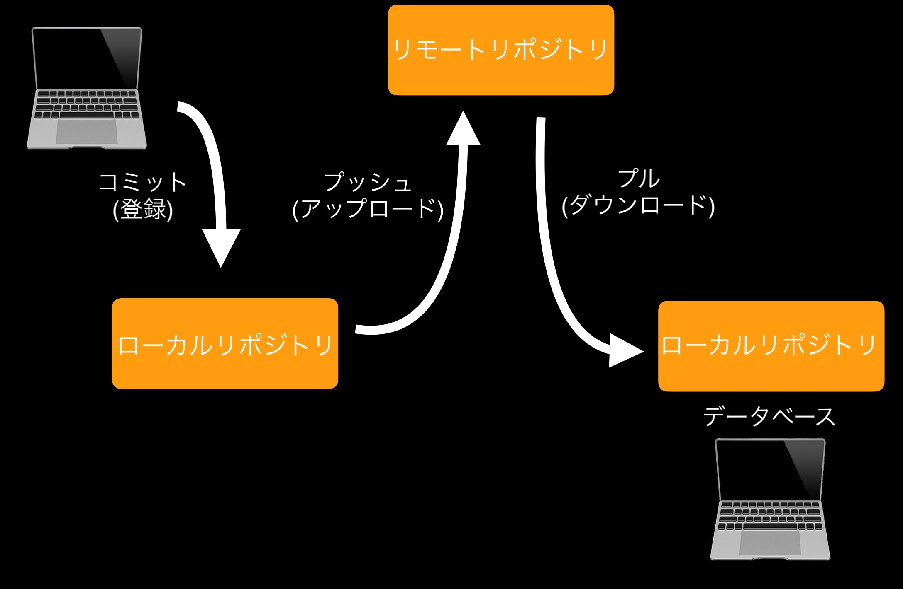

gitについて
gitとは？
あるデータを編集している際に、修正や更新を繰り返したことにより同じようなデータが増え、 どのデータを編集すれば良いのかわからなくなってしまうことがある。そのような問題を解決するために生まれたのがgitである。 gitとは代表的な分散型バージョン管理システムのことであり、ファイルのバージョンを管理している。 gitを使用していれば、仮に上書きされた内容に不備があってもファイルのバージョンは管理されているため、 簡単に元へ戻すことができる。言い換えるならば、「変更履歴が残っているためいつでも任意のバージョンへ戻せる」ということだ。


その他の利点は以下である。
・変更履歴の共有が安易になる
・共同開発を効率的に行えるなど
gitを使う上での基本用語

リポジトリ：ファイルや変更履歴を保存するデータベース（カゴヤのサーバー研究室 【入門】Gitとは？できることや使い方、GitHubとの違いをわかりやすく解説）
htmlとは
htmlとは「ハイパー・テキスト・マークアップ・ランゲージ」の略であり、Webページを制作するためのマークアップ言語である。 「タグ・要素・属性」の3つで構成されており、それぞれに役割が存在する。Webページの見た目は基本的に、htmlとCSS（色や文字サイズなどの装飾を設定する言語）によって作られています。 マークアップ言語とは、テキスト情報の構成（タイトル・段落など）や役割をコンピュータが構造的に理解できるようにするための言語を意味する。
・タグ
htmlの記述に意味を与える印のこと
・要素
Webページを構成するテキスト情報のかたまりを指す
・属性
個々のタグに特定の性質や動作を与える記述のこと
参考文献